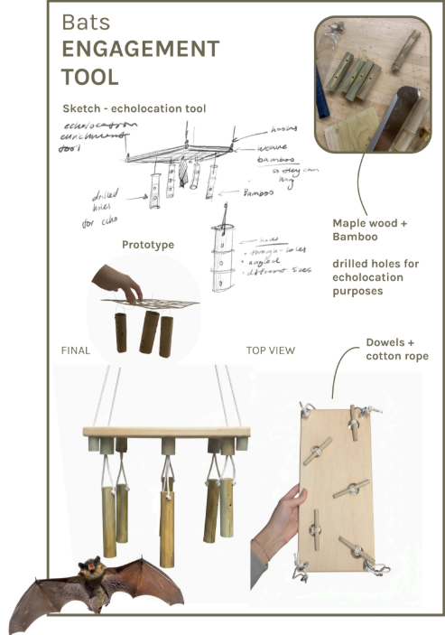
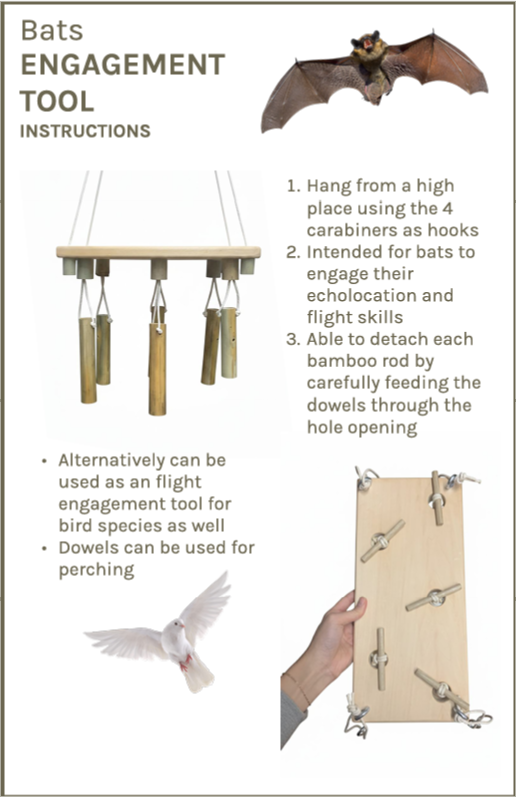

Bat Bolthole

Bat Mobile


Ce projet visait à créer un outil d’enrichissement et d’engagement pour la Wildlife Rehabilitators Association of Rhode Island, ainsi qu’une intervention faunique in situ, tous deux conçus pour une seule espèce du Rhode Island. Notre espèce cible était la grande chauve-souris brune. Nous avons créé le Bat Bolthole, un gîte adapté aux environnements urbains et ruraux, et le Bat Mobile, un jouet d’enrichissement suspendu destiné à entraîner l’écholocation et la mobilité des chauves-souris pendant leur réhabilitation.
Ce projet a été réalisé en collaboration avec Janet Sun et Jack Dacey.

